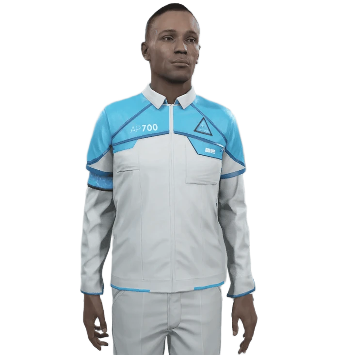

AP700 - Лена
AP700 — Флагманська модель домашнього помічника від CyberLife.
Основні характеристики:
- Розширена мовна підтримка (понад 50 мов)
- Адаптивна система навчання
- Вдосконалена емоційна симуляція
- Високий рівень автономності
Функціональні можливості:
- Повний контроль домашнього господарства
- Освітні функції для дітей
- Медичний моніторинг членів сім'ї
- Персональний асистент з розпізнаванням голосу
- Система безпеки та моніторингу
- Розширена база кулінарних рецептів
- Фітнес-тренер та консультант зі здорового способу життя
Технічні характеристики:
- Процесор: CyberLife CPU A3 200
- Оперативна пам'ять: 128 ГБ
- Внутрішня пам'ять: 64 ТБ
- Акумулятор: 48 годин автономної роботи
- Вага: 45 кг
- Ріст: 170 см